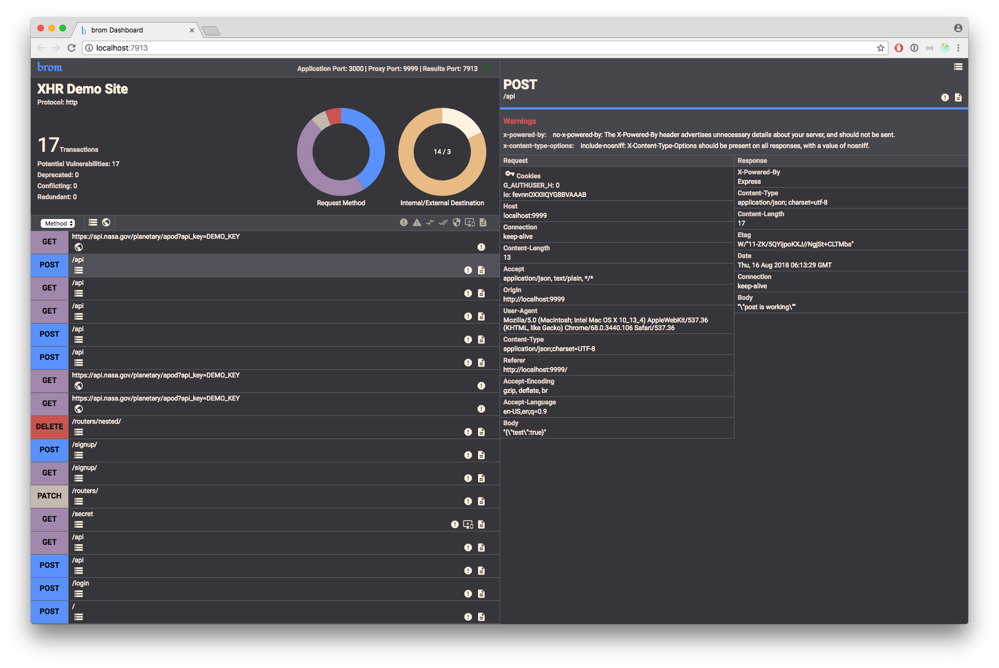

Highly configurable auditing of HTTP transactions
brom is a configurable CLI for recording HTTP transactions and improving security practices, designed for use in local environments and CI tools. Get your headers in order before deployment.
Getting Started
brom is available as an npm package, and must be installed globally.
npm install -g brom
Navigate to the root directory of your project and execute brom, followed by the path to your server file and the port which it runs on.
brom server/index.js 3000
brom will start proxying your application on another port (defaults to 9999) and launch a gui in your default browser. At this point you can navigate to localhost:9999 in another browser window and start interacting with your site.
Interactive Auditing
brom proxies your server, recording HTTP transactions as they stream through, and injecting a script into HTML documents to record third-party AJAX calls (on by default).
Automated Auditing
When called with an --automated flag, brom traverses Express application structures to identify all registered routes and their supported methods, sending dumb requests to each one. Great for check-ins and (with a bit of configuration) build processes.
Rules
While brom comes with smart defaults for assessing header practices, the security needs of your application are unique. brom provides a rule syntax to allow you to create your own rules. Here's a built-in rule:
{
id: 'no-x-powered-by', // rule name (unique)
header: 'x-powered-by', // where to display in UI
when: (headers, type) => type === 'response', // when to run this rule
expect: headers => !headers['x-powered-by'], // pass/fail statement
fail: {
message: `The X-Powered-By header advertises unnecessary
details about your server, and should not be sent.`,
flags: ['severe']
}
pass: {
flags: []
}
}